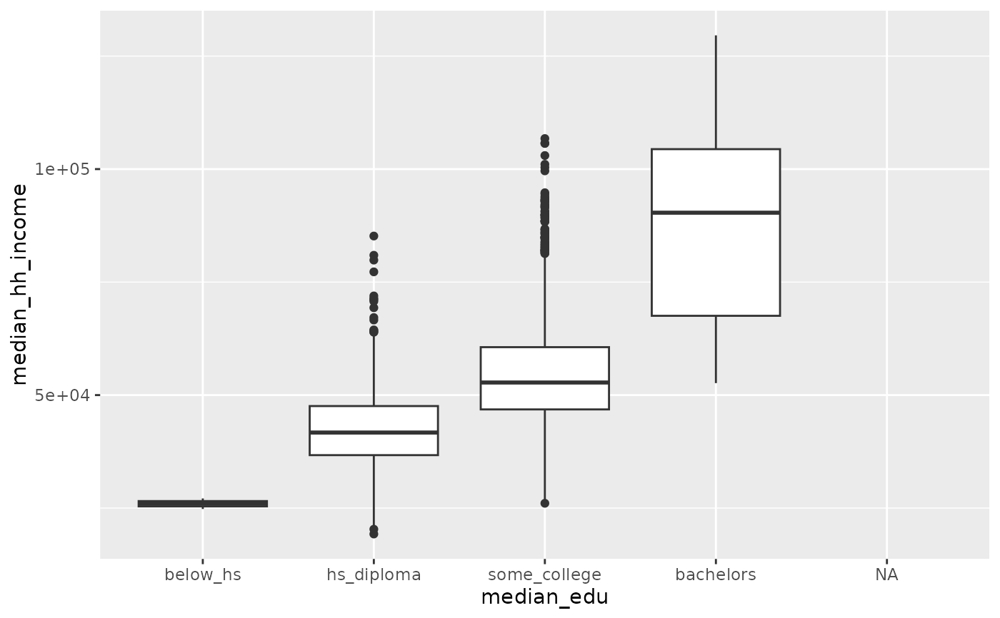

Data for 3142 counties in the United States. See the
county_complete data set for additional variables.
Format
A data frame with 3142 observations on the following 14 variables.
- name
County names.
- state
State names.
- pop2000
Population in 2000.
- pop2010
Population in 2010.
- pop2017
Population in 2017.
- pop_change
Population change from 2010 to 2017.
- poverty
Percent of population in poverty in 2017.
- homeownership
Home ownership rate, 2006-2010.
- multi_unit
Percent of housing units in multi-unit structures, 2006-2010.
- unemployment_rate
Unemployment rate in 2017.
- metro
Whether the county contains a metropolitan area.
- median_edu
Median education level (2013-2017).
- per_capita_income
Per capita (per person) income (2013-2017).
- median_hh_income
Median household income.
- smoking_ban
Describes whether the type of county-level smoking ban in place in 2010, taking one of the values
"none","partial", or"comprehensive".
Source
These data were collected from Census Quick Facts (no longer available as of 2020) and its accompanying pages. Smoking ban data were from a variety of sources.
Examples
library(ggplot2)
ggplot(county, aes(x = median_edu, y = median_hh_income)) +
geom_boxplot()
#> Warning: Removed 2 rows containing non-finite outside the scale range
#> (`stat_boxplot()`).
